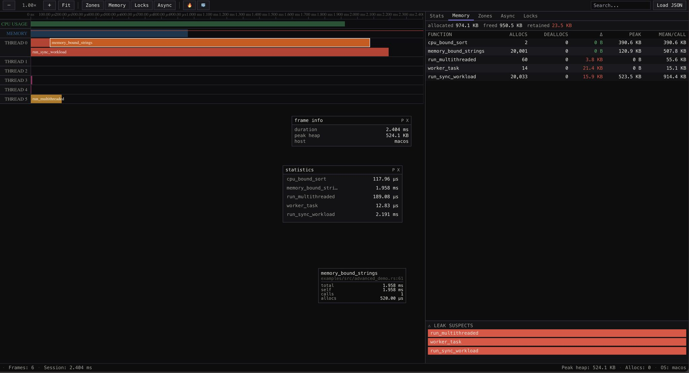

RustScope
Unified performance profiling infrastructure for Rust systems.

What is it
- Problem: Modern Rust profiling is fragmented. Developers must juggle perf for CPU, heaptrack for memory, and custom instrumentation for function-level SLOs, often losing the "big picture" of how system metrics correlate with code execution.
- Solution: RustScope provides a unified profiling CLI and a zero-cost instrumentation library. It captures CPU spikes, memory leaks, thread activity, and function-level latencies into a single, dashboard-ready JSON report.
- Non-goals: This is not a debugger or a live production monitoring agent (e.g., DataDog). It is a developer-centric tool for performance auditing, regression testing, and micro-benchmarking.
- Status: Beta. Current version 0.3.1. The JSON schema is stable for dashboard integrations. (v0.4.0 in progress with Linux LD_PRELOAD profiling).
IMPLEMENTED & TESTED FEATURES
Core Profiling (Library)- Function Instrumentation — Attribute macros for timing, memory, and stack depth. Status: Implemented + Tested Coverage: rustscope/tests/integration.rs::test_basic_profiling Contract: Guarantees < 50ns overhead per instrumented call.
- Status: Implemented + Tested Coverage: rustscope/tests/integration.rs::test_benchmark_runner Outlier Detection — Online statistical anomaly flagging using Welford's algorithm.
- Status: Implemented + Tested Coverage: rustscope/tests/integration.rs::test_outlier_detection
Statistical Benchmarking — High-precision statistical runner with warmup.
- Indefinite Process Monitoring — Continuous polling of CPU, Memory, Threads, and FDs. Status: Implemented Contract: Automatically stops and flushes data when the child process exits or on Ctrl-C.
- Session Event Detection — Real-time detection of CPU/Memory spikes. Status: Implemented Behavior: Records "spike" events in JSON when memory grows > 5MB or CPU > 80% between samples.
- macOS Function Sampling — Sidecar integration with macOS sample command. Status: Implemented Contract: Parses complex sample output into standard Function schema.
- Rationale: We need to detect anomalies in real-time without storing every single call duration in memory
- Theory cited: Welford's algorithm allows computing running mean and variance in
O(1) time andO(1) space. - Trade-offs: More sensitive to early-session noise; requires a "warmup" period (default 10 calls).
- Rationale: Most backend performance issues happen during specific session events (hitting a route), not fixed time windows.
- Theory cited: Event-driven monitoring — decoupling collection from time improves signal-to-noise ratio for servers.
- Anti-patterns avoided: "Blind profiling" where data collection stops before the interesting event occurs.
- Rationale: Traditional timing on async fns measures "Wall Time" (including time spent yielded), which is useless for CPU profiling.
- Trade-offs: Slightly higher overhead due to future wrapping; requires async-profiling feature.
- Scenario: User hits /heavy-route.
- Detection: Memory jumps 10MB.
- Action: CLI pushes a MemoryEvent { type: "spike", location: "Memory spike: +10.0 MB" }.
- TUI: Terminal flashes [!] SPIKE and increments EVENTS count.
- Process Not Found: If proc_pidinfo or /proc reads fail repeatedly, the CLI assumes the child has exited, flushes remaining data, and shuts down cleanly.
- macOS Permission Denied: If sample fails due to SIP/Permissions, the tool logs a warning but continues collecting system metrics (CPU/Mem).
- Instant Visualization — Simply drag and drop any rustscope-last.json to generate high-resolution flamegraphs.
- Multi-Format Support — Native support for RustScope JSON, plus compatibility with inferno, samply, and pprof stack traces.
- Interactive Stack Explorer — Seamlessly toggle between Flamegraphs (top-down) and Icicle Charts (bottom-up) with smooth D3 transitions.
- Search & Filtering — Instant search for function names and intelligent filtering to isolate your crate's logic from std or allocator overhead.
- Smart Insights — Automated heuristic analysis flags critical bottlenecks, deep recursion, and memory-heavy hot paths.
- Zero-instrumentation Tracking: Intercepts libc symbols (malloc, free, realloc) for any binary (C/C++, legacy Rust, etc.).
- High-Performance Bridge: Uses a named UNIX pipe (RUSTSCOPE_ALLOC_PIPE) for low-latency transmission of allocation events to the CLI.
- Deep Memory Analysis: Enables tracking of allocation source and lifetime even for non-Rust dependencies.
ARCHITECTURE OVERVIEW
Component Diagram
graph TB
subgraph CLI["RustScope CLI (Orchestrator)"]
MAIN["main.rs (CLI Logic)"]
PROF["Profiler Module"]
SAMP["Sample Loop (Tokio)"]
OUT["JSON Writer"]
end
subgraph LIB["RustScope Library (Target)"]
ATTR["#[profile] Macro"]
GLOBAL["GlobalProfiler (Atomics)"]
ALLOC["TrackingAllocator"]
end
subgraph OS["OS Boundary"]
PROC["/proc (Linux)"]
LIBPROC["libproc (macOS)"]
TOOL["'sample' command (macOS)"]
end
MAIN -->|Spawn| LIB
SAMP -->|Poll| PROC
SAMP -->|Poll| LIBPROC
PROF -->|Spawn Sidecar| TOOL
LIB -->|Flush| OUT
SAMP -->|Aggregate| OUT
Boundary Definitions
| Boundary | Protocol | Auth mechanism | Failure mode | Retry strategy |
|---|---|---|---|---|
| CLI → Child Process | OS Signals (SIGINT/SIGTERM) | N/A (Process Owner) | Process Zombie | 2s Graceful Wait then SIGKILL |
| CLI → /proc (Linux) | File I/O | FS Permissions | Permission Denied | Graceful Fallback (0.0 metrics) |
| CLI → libproc (macOS) | C FFI (proc_pidinfo) | N/A | Access Restricted | Fallback to ps command |
| CLI → Shim (Linux v0.4) | UNIX Pipe (RUSTSCOPE_ALLOC_PIPE) | N/A (Process Owner) | Pipe Full/Broken | Drop event (zero-blocking) |
Architectural Decisions & Trade-offs
Decision: Welford's Online Algorithm for OutliersDETAILED FLOWS
Happy Path: Binary Profiling
sequenceDiagram
autonumber
actor User
participant CLI as RustScope CLI
participant Target as Target Binary
participant OS as Operating System
User->>CLI: rustscope -- ./my-app
CLI->>OS: Spawn Process
OS-->>CLI: PID: 1234
CLI->>CLI: Start Sample Loop (100Hz)
loop Every 10ms
CLI->>OS: Read /proc/1234/stat
OS-->>CLI: CPU/Mem Data
CLI->>CLI: Detect Spikes
end
Target->>Target: Finish Work
Target-->>OS: Process Exit
CLI->>CLI: Final Sample & Stop
CLI->>CLI: Flush JSON to rustscope-last.json
CLI-->>User: ✓ Success
Indefinite Backend Monitoring
When running with -d 0 (default), the CLI monitors for Session Events.
DATA MODEL & SCHEMA
Entity-Relationship (JSON Shape)
The output is a single ProfileSession object:erDiagram
META ||--|| SUMMARY : contains
SUMMARY ||--o{ SAMPLE : "one per second"
SUMMARY ||--o{ FUNCTION : "sorted by self_pct"
SUMMARY ||--o{ MEMORY_EVENT : "detected spikes"
META {
string project
u64 start_ts
string target_binary
}
SAMPLE {
f64 cpu_pct
f64 heap_mb
u32 threads
}
MEMORY_EVENT {
u64 ts
string type
string location
}
VISUALIZER (UI/UX)
RustScope includes a premium, web-based visualizer built with Next.js, Tailwind CSS, and D3 for deep analysis of your performance profile sessions.
Key FeaturesCHANGELOG & ROADMAP
v0.3.1 (Current): Unified CLI, macOS Spike detection, indefinite duration, and new Visualizer frontend.v0.4.0 (Next): Linux LD_PRELOAD allocator shim for per-call allocation tracking.